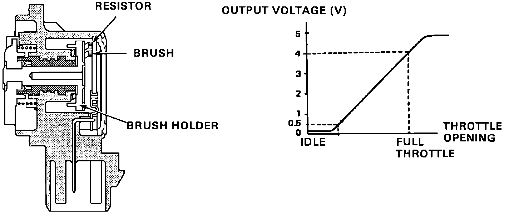

Throttle Position Sensor: Description and Operation
Throttle Position Sensor:

PURPOSE
The sensor is used by the Engine Control Module (ECM) to detect throttle movement and position.
OPERATION
A 5 volt reference signal is applied from the ECM and a ground signal. When the throttle is opened the sensor resistance changes which is read as a varying voltage signal. At idle position the sensor voltage is approximately 0.5 volt and approximately 4.5 volt at full throttle.
CONSTRUCTION
The sensor is a variable resistor (potentiometer) that is driven by the throttle shaft. It is a part of the throttle body assembly and is not available separately.